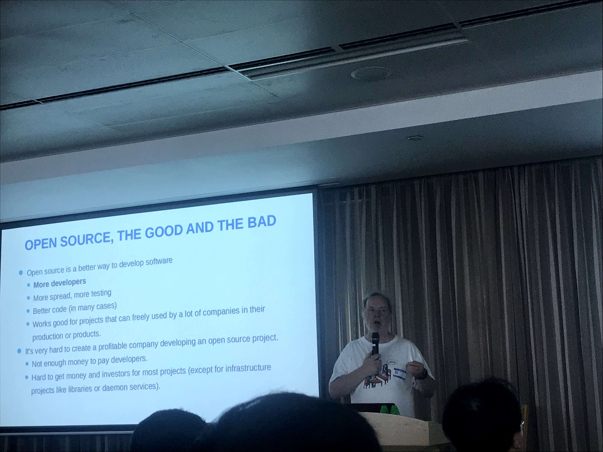
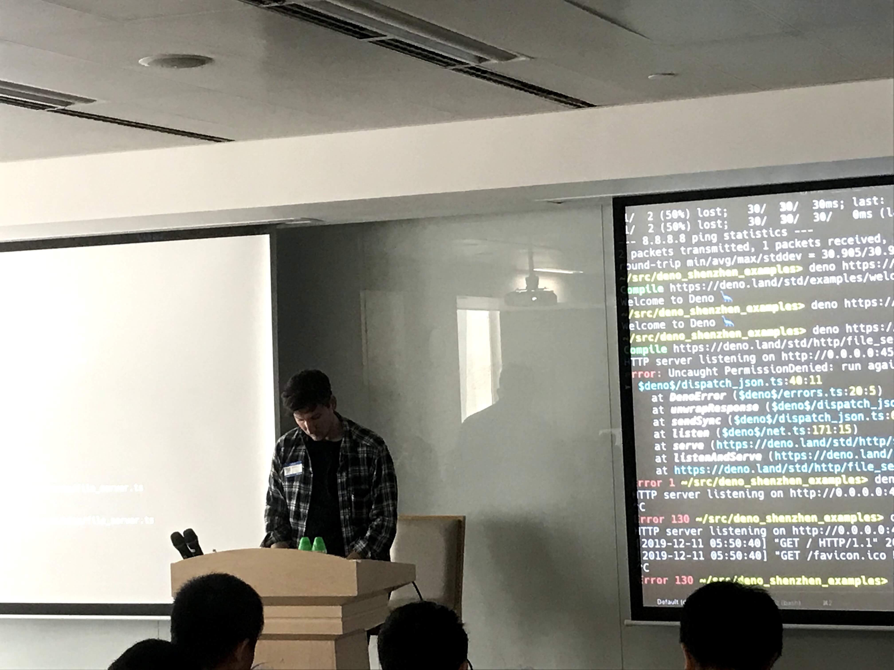
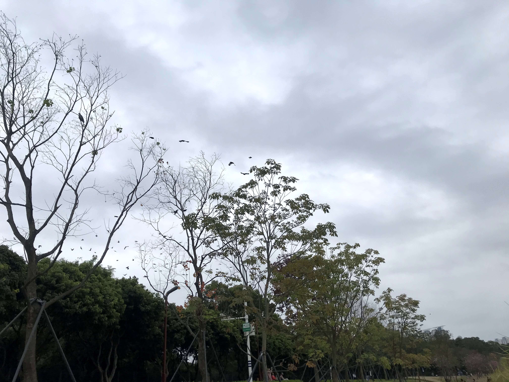

转眼2019剩下 5% 不到了，是时候水一下总结
下午在做部门的下半年述职PPT的时候，才发现这下半年什么事情都没做，划水划过去了，结果ppt没啥好写的 可恶！
关于学习
不得不说，今年下半年的重心更多是倾向学习这块，虽然没有达到百分之百，不过也算满意，啃了高数和计算机原理。
原定要过八科，普通逻辑不用考，过了六科 算是还行。
但是自从十一月成绩公布以来，懒懒散散的，之前七点早起的习惯也没了…而且现在搬到生态园，中午和晚上学习的地方也还没找到合适的 真是让人惆怅。
不过也还好，可以利用中午的时间把之前微信收藏的几十篇文章慢慢过一下。
2020定的学习计划比今年还要重，五个考试和三个实践，当立个flag🚩🚩🚩，早点把这个东西搞定才能把心思都放在工作上。
还特地听了吴苏三胖的话，去买了本新概念1，打算从头开始学英语，把英语给考了。如果是按照下半年那个学习的劲头倒还可以尝试，如果是这一个月来的划水状态，真的是浪费时间 叹口气加油吧
关于工作
如果说学习方面评为良好的话，工作应该算是不及格吧。 年中定的计划现在一个都没完成，ppt胡搞瞎搞都不知道怎么搞，明天上台也不知道能怎么扯个八分钟。
算是鞭挞一下自己
- 原生知识还是只懂毛皮，写写demo，自己小的项目都做不了，大失败！
- 后台知识基本没涉及，不过也不在计划之内
- 前端知识，更加熟练的流水工而已，没啥突破
- 和霜爷一起做开源，做了两个星期就不搭理人家 哈哈哈哈，写ppt的时候还可以蹭个名字 笑死
难搞哦。
20年的话，emmmmmm 应该会放点精力在java端，得跟着朋友做点小项目才行，应付毕业设计和实践考试；然后公司项目上输出一点文章到km，也尝试着一起参与项目表单模式设计；最重要的是得找到一个可以真正学习实践的点，现在扯什么全栈是最不靠谱的。
具体的得等和老大沟通才知道，不过真的这些事情得主动，这次算是吃了个教训。
不过今年倒是去听了几场内部的小型分享会。
 MySQL和MariaDB之父 Michael 分享，全场听下来只记得他说的几句话 > 大女儿叫 "My" 所以第一个数据库起名`MySQL`，二女儿叫Maria...所以后面写的数据库叫`MariaDB`...这...  node.js 和 deno.js之父Ryan Dahl 承认deno设想很好，但是没有生态注定不能商业化，如果兼容node的话，又很难撇清关系，现在node已经有慢慢通过升级改掉很多毛病，剩下的用一些工具也可以完成，没必要特地开个新语言来整合，所以听完还是不大看好。关于健康
哎呀，今年真的和算命先生说的一样，这儿疼哪儿痛的（一个做it的会相信算命先生的话， 没想到吧 (～￣▽￣)～ ）。
弄了几个牙齿，看了皮肤科，最后还去理了肠胃。
其他还好暂时告一段落，就是胃镜这玩意真不是人照的，最有印象的话是医生看完胃镜说了句“年纪轻轻就萎缩了”，哎 以后爱惜身体咯
看了下今年除去刷医保的钱以外，看病总共花了八千多…不过里面有老爸老妈体检费，所以也没有那么夸张，后面买个重疾啥的，又得花钱。
至于19年的运动计划，等老命保住再说吧，现在养身多了，可乐咖啡都不怎么敢喝，周末没事都要出去走走散散步。
关于其他
- 工资的目标算是达到了，不过以前在广州，现在在深圳，也没有多很多 勉勉强强。不过明年不敢定工资计划了，现在没技术，没学历混口饭吃先。
- 拿了驾照，还行 还行 虽然没车，不过总算完成了。
- 原生开发的目标算是黄的彻底
- 存款一方面应该是定的偏少了，另一方面是股市回血了一点点 还行勉强接受 哈哈。本来存个一两万不是很想写进来，后面想想还是要有个交代才能继续。
- 考试的计算也算是可以接受
emmm 这么一看，好像除了作息不规律，健康有点问题；以及工作没啥进取以外 其他都还行。
不过现在的焦虑感一年比一年更强，想想汕头的朋友几个都结婚小孩都有了，某坤少也是，再看看自己房子没有，老婆没有，车子没有，票子也没有。
当然最大的焦虑其实是怕脚步赶不上老爸老妈老去的速度。
今天下午老妈在群里问我和老姐，家里不要的衣服可不可以拿去捐了？
这事让我有点激动，我们在学习进步的时候 老妈子也与时俱进，至少今年学会微信简单操作，平时视频聊天啥的没毛病，真好 科技改变生活。
前几天大学几个朋友在群里聊天，一个说到：
算一算，能陪父母的时间可能也就十几年了，这么一想好像一下子无法接受。想早点成家满足家里人抱孙子的愿望
是啊，像我现在在外面的，时间更少，以后也不知道定居在哪里。唯有少玩点游戏，少刷点抖音减少负罪感。
说到游戏和抖音，最近一个月就是因为这两个玩意搞得无心学习，这玩意对我这个毫无自制力的人来说太可怕了，记得有一天玩到晚上四点，隔天起床立马把游戏卸了，控制不住自己的话，至少可以提高玩的成本。
还有就是抖音，记得之前看过一个公众号就是说这个的，这种基于推荐系统的软件都不是什么好软件，特别容易沉迷。
不过抖音有一个积极的方面就是以后可以有什么小tip就在上面搜一下， 算半个知乎，实用技巧啊，科普啥的应该还行，先留着吧。
再叨两句，下午散步的时候刷知乎看到一个问题，大概是:
大学本科，同学都作弊，我没有作弊，我得到什么？
有一个回答写的是什么都没有得到。看到这个标题的时候，我是挺有感触的，因为我也是这类人，虽然不是说从小到大没有作弊过，但是自认为很多时候还是比较正派耿直（其实就是胆小），所以可能会错失很多捷径或机会。
想想他们作弊的人以后绝大部分是不会得到什么鬼报应，而我坚持不作弊也不会有什么好处，当然看这个问题的时候，想的肯定不只是作弊的问题，可以延伸到生活中的各个场景，所以有时候觉得这种老实巴交的人，活该赚不了钱。
真想2020年可以学会狡猾？奸诈？一点？ 你看，连一个褒义的词都想不出一个，用圆滑吧。
所以2020年关键字是：自考 健康 英语 __专业__。
最后的最后，放多一张照片，今天下午散步拍的，刚好看到左上角有一群小鸟在飞。
希望能和这些小鸟一样，在大城市有个自己的小角落。
